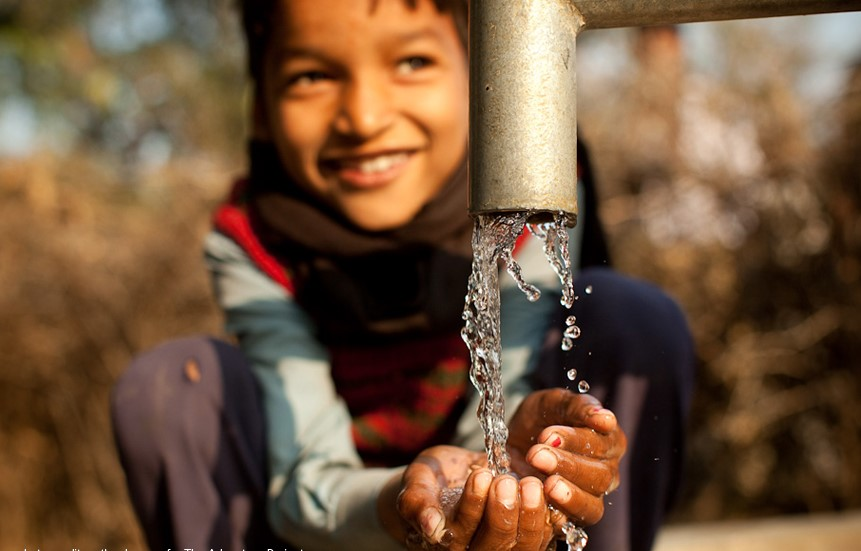
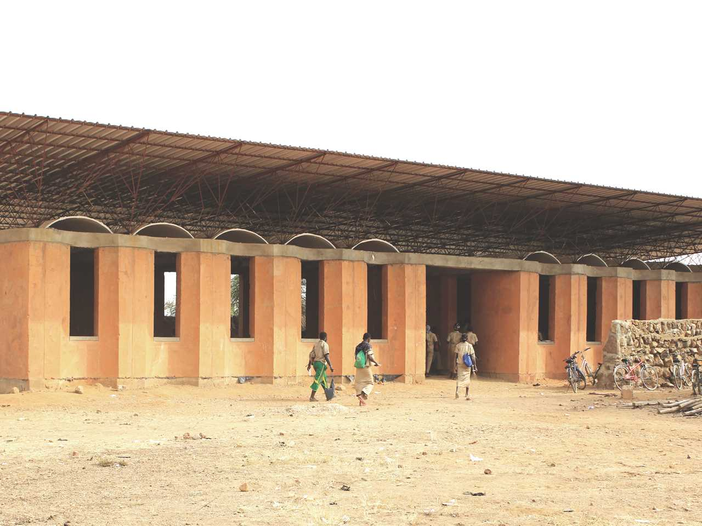
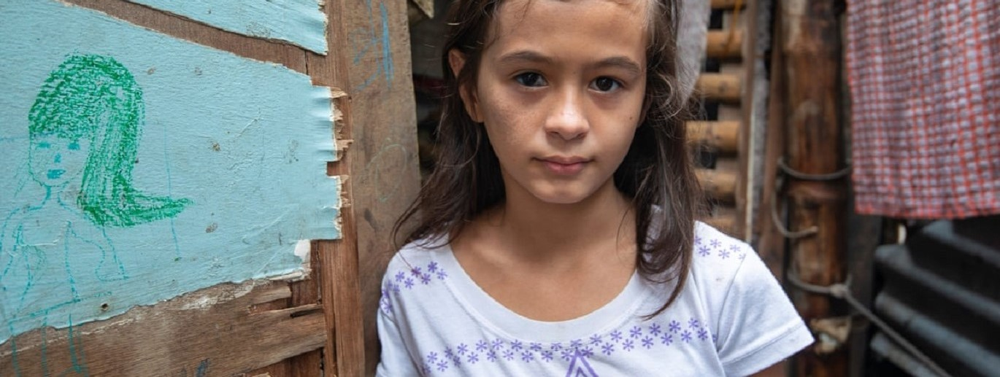
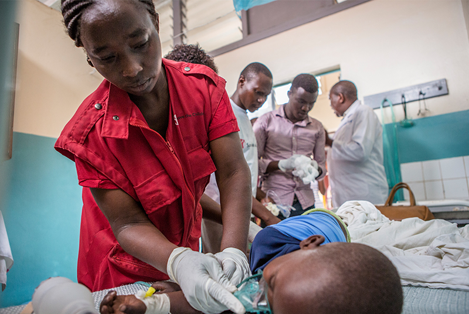
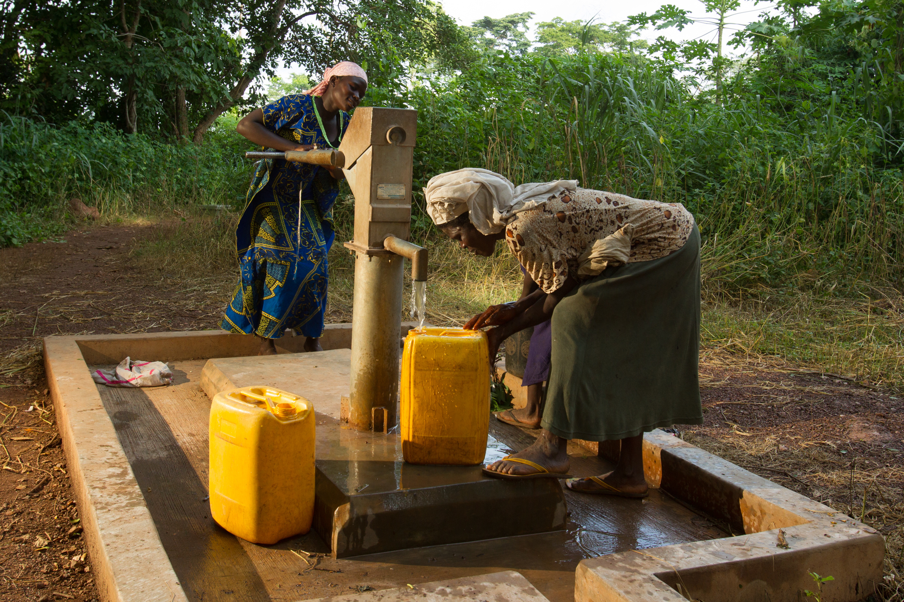

Upcoming & On going projects
 In Southern India, our teams include soapmaking as a part of their sanitation and hygiene training. We enable access to soap for handwashing and provide a new skill that can help some entrepreneurial people make a little extra money. Soapmaking is one of our most popular training topics � particularly with students. Our teams bring the materials to make the soap and lead a hands-on demonstration to make a batch of soap. The students love to join in and help mix all of the ingredients to make the soap. In some cases, they compete to see who can stir the thick liquid the quickest.
 We are currently building a primary school in Northern part of Sri Lanka. Without classrooms, they are forced to study under trees, in all weather. They are exposed to the elements, distracted, and unable to learn. For those who do have some shelter, it is often unstable, with holes in the ceiling that let the rain in, leaving children cold and wet, and ruining their work.
Previous projects
 Over the years the people of Pakistan have been hit hard by unrelenting monsoon floods and earthquakes. We always tries its best to respond quickly to these disasters. Our emergency program consists of providing shelter, medical aid, education, nutrition and other humanitarian relief to the victims of these natural disasters.
 It�s been nearly two months since the explosions that tore through Lebanon�s capital Beirut. And while many families remain in dire need, HelpInNeed is stepping up its effort to help families get back on their feet. In the first few days, they helped us deliver immediate life-saving support, provide psychological first aid for children, and assist families with temporary shelter for those who had lost their homes, as well as distributing meal and hygiene kits. One of the most critical tasks was reuniting children and families that were separated as a result of the blast. It�s a very complex process, but one that we have a lot of experience in, and all possible efforts were focused in this area.
 Thanks to our local partner Clear Cambodia, support from the surrounding community, and your generosity, 44 people in Cambodia have access to clean and safe water! You helped fund a water filter(s) for a community in Cambodia, implemented by our local partner Clear Cambodia. We rely on the expertise of local partners like Clear Cambodia to choose the best solution for each unique situation. In this case, Clear Cambodia�s thorough understanding of how to implement effective, sustainable water projects in their area led them to choose a water filter(s).